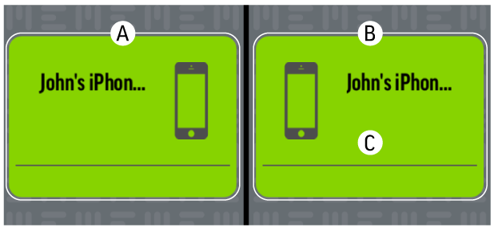
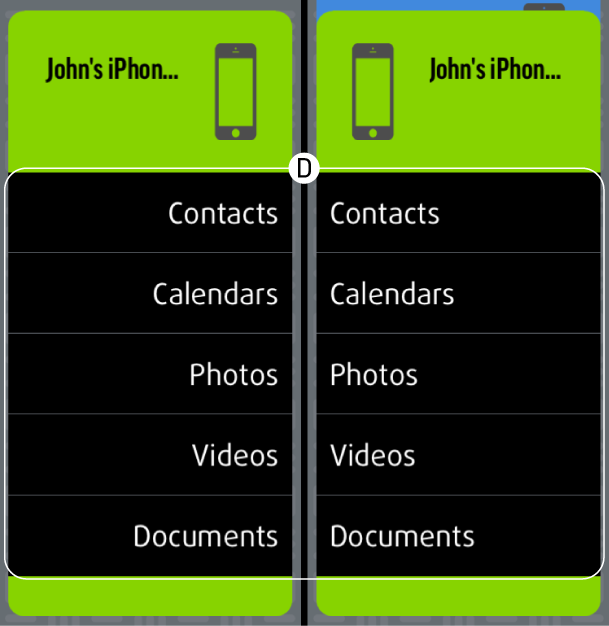

Understanding the App
The app will open on the main screen. Here you will see two boxes, one mirroring the other, which will show the name of your device; the box on the left (A) depicts your phone while the one on the right (B) represents the MEEM backup. Tapping either box will display a list of the categories (D) available to be backed up. The box on the right also displays the time since last backup (C).


To view the other areas of the MEEM app click on the menu button (three horizontal lines) in the upper left hand corner of the screen. Here you will see all the sections of the MEEM app.